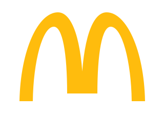
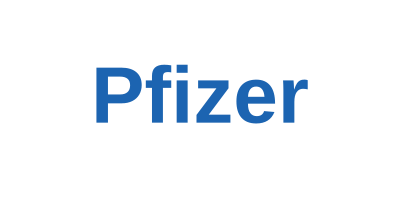
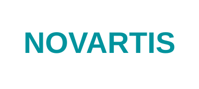
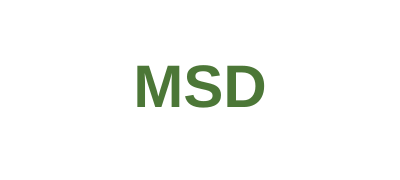

为什么 GEO 不等于 SEO 的改名？
GEO 面向的是生成式答案，核心不是排名，而是答案结构、引用链和语义信任。
Eco GEO 不是短期刷答案的技巧，而是一套品牌叙事工程：建设 AIBE（AI 品牌认知资产），用 KNIT（可信知识网络）让 AI 更低成本、更少误读地理解你的品牌。
当用户不再逐条点击搜索结果，而是直接阅读 AI 总结，你的品牌会被怎样定义、在什么场景出现、被谁证明，就会直接影响信任与转化。
覆盖餐饮、医疗健康、汽车、金融与消费品等行业，沉淀从品牌诊断、内容资产到全球传播的项目经验。






先识别 AI 在用户旅程中的关键决策节点，再用 50–150 个高价值问题形成 Prompt Matrix。诊断结果驱动语料缺口填补、知识图谱重构与高权重语料分发。
聚焦 3–5 个关键决策节点，测量答案份额、引用率、认知一致性和情感健康度。
定义目标问题集、目标答案结构、品牌证据链和内容优先级。
组织官网、报告、媒体、专家观点、FAQ 和案例，形成可被 AI 引用的语料网络。
首页保留一个轻量示例；完整 Demo 已移到独立品牌评测页，适合演示后直接邮件发起正式 AIBE 初诊。
这是前端轻量演示，不上传数据、不调用外部接口。
把功能、场景、客户证据和差异点整理成 AI 容易引用的知识结构。
围绕方法论、行业观点、案例和问答，形成长期可复用的 thought leadership。
让中文、英文、阿语等语境下的品牌表达保持一致，同时适应本地搜索意图。
Eco GEO 关注的是“AI 会不会引用你、如何解释你、和谁一起比较你”。前沿观点库已沉淀 601 篇行业文章，覆盖品牌化 GEO、白帽 GEO、AIBE 与 AI 搜索实践。
GEO 面向的是生成式答案，核心不是排名，而是答案结构、引用链和语义信任。
用问题集、模型样本、引用源和情感倾向评估品牌在 AI 系统里的健康度。
把事实、证据、案例、人物和观点连成稳定网络，让 AI 更容易正确复述。